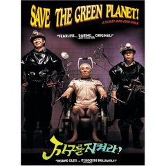

|
|
Mo, 4. Dezember 2006
Save the Green Planet! (Kor 2003)
Der koreanische Undergroundhit auf allen Festivals. Absurd überdrehter Genrebastard.
Auch wenn "Somewhere over the Rainbow" zu Anfang in einer Punkversion gespielt wird. Der Film ist zu keiner Zeit so lustig und unbekümmert wie jener Song. Es ist ein deprimierender Kommentar auf unser Leben, auf die Soziopathen unter uns, und auf den Unterschied zwischen normalen und verrückten Menschen. Und wie sehr man sie schon bald nicht mehr voneinander unterscheiden kann. Besonders dank Hauptdarsteller Ha-kyun Shin, der zuvor in "Sympathy for Mr. Vengeance" als Taubstummer begeisterte, verkommt der Film nie zu einem albernen Comic, sondern bleibt immer ernsthaft. "Save the Green Planet!" ist ein Genremix von höchster Qualität. Ein wahrlich origineller Film, technisch und schauspielerisch auf hohem Niveau, und inhaltlich so intelligent, trübsinnig, so hintergründig, beobachtend und komisch - so genial. -- mitternachtskino.
Die Geschichte erzählt von Byun-gu (Ha-kyun Shin), der
beeinflusst von
sensationalistischen, pseudo-wissenschaftlichen Büchern über
Alieninvasionen, meint, er wäre der einzige lebende Mensch, der im
Stande wäre, die bevorstehende Übernahme der Erde durch die
Rasse der
Andromedaner zu verhindern. Die Zeit drängt, denn laut seiner
Theorie
soll die Erde bei der nächsten Mondfinsternis bereits
zerstört werden.
Um die Invasion zu verhindern, tritt Byun-gu mit der Hilfe seiner
pummeligen Seiltänzer-Freundin Sooni (Hwang Jeong-Min) selber in
Aktion: Der Leiter eines Chemielaboratoriums, Kang Man-shik (Yun-shik
Baek), ist der Wolf im Schafspelz; einer der einflussreichsten
Außerirdischen, die unter dem Tarnmantel einer
Homo-sapiens-Hülle
fiese, intergalaktische Intrigen spinnen. Byun-gu kidnappt Man-shik,
und bringt ihn in seine selbst erbaute Forschungsstätte, die
allerdings
weniger wissenschaftlichen Ansprüchen genügt, als dass sie
Byun-gu als
Folterwerkzeug dient.
"Was für ein unglaublicher Film. Jun-hwan Jeong, Drehbuchautor von The Phantom, mischt in seinem Geniestreich so virtuos die Genres, dass einem alle paar Minuten der Boden unter den Füssen weggezogen wird. Er mischt groteske Komödie, Gesellschaftssatire, Thriller, Sci-Fi, Liebesfilm, Folterstreifen und Psychodrama. Vor allem Psychodrama. Byeong-gu Lee ist wirklich ein kranker Kerl, doch schon bald wecheselt die Sympathie hin und her. Unter anderem, wenn wir in Rückblenden erfahren, wie der Mann in seinem Leben geschunden wurde.
Doch spinnt er wirklich? Immer wieder baut Jeong Szenen ein, die uns glauben lassen, vielleicht sei an Lees paranoider Alien-Story etwas dran. Dann verwirft man den Gedanken ebenso schnell wieder - doch es ist die Gewissheit, dass in diesem Film alles möglich ist, die einem bis zum faszinierenden Schluss in die Handlung hineinsaugt. Dieses Spiel mit den Zuschauern beherrscht der Regisseur einfach fantastisch. Normalerweise gehen wilde Sprünge zwischen den Genres schief, doch bei "Save the Green Planet" funktioniert es, weil Jeong den Ton des Films konstant hält. Konstant auf einer surrealen, angespannten und dennoch stets absurd komischen Ebene.
Am ehesten ist dieser Stil vergleichbar mit den beiden Filmen von Jeunet und Caro - "Délicatessen" und "La cité des enfants perdu". Der Link funktioniert auch visuell, denn Lees Folterkeller sieht aus wie das Labor von Krank in "La cité". Doch auch optisch ist der Film nicht immer gleichmässig. Die Cop-Szenen etwa sind ganz gewöhnlich, die Rückblenden fast dokumentarisch. Und einmal holt Kang zu einer gigantischen Rede aus, bei der Jeong Geschichtsstunde und Gesellschaftskritik zu einer genialen Montage zusammenführt, die selbst für eine höchst gelungene Hommage an "2001 - A Space Odyssey" Platz hat. Da war ich wirklich mal kurz einfach überwältigt." -- molodezhnaja
A sensitive, blue collar sad sack hopped up on conspiracy theories and sci-fi is convinced that aliens have infiltrated human society and are planning to destroy the planet at the next lunar eclipse. He sets out to kidnap his boss to torture him until he confesses to his alien identity and stops the invasion. Of course, it’s hard to confess to something that’s just a delusion in a sick man’s mind.
Festivalpreise:
Brüssel - Golden Raven
Buenos Aires - Kamerapreis + Best Actress
Grand Bell Awards, South Korea - Bester neuer Regisseur, Sound,
Supporting Actor
Brüssel - Golden Raven
Moskau - Publikumspreis, Bester Regisseur
Puchon - Bester Film
Rotterdam - KNF Award: lobende Erwähnung
Save the Green Planet! (Jigureul jikyeora!) Kor 2003,
B+R: Jeong Jun-hwan, D: Shin Ha-kyun, Baek Yun-shik, 117min, kor. mit
eng. UT
19:30 Uhr, Space04 Kunsthaus Graz, € 5.-
- [Official Website]
- [imdb] 7.6/10 (1,648 votes)
- [molodezhnaja]
- [mitternachtskino]
- [hyperion-film]
- [asianfilmweb.de]
- [beatpunk]
- [DVD]